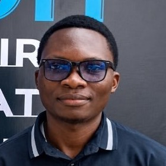

I build agent systems that hold up in production, and post-train the models behind them. I was a founding engineer on a multi-agent trading system now in daily use at a buy-side fund, and I currently work on post-training open-weight LLMs for long-horizon, tool-using research agents.
genai.Client: the async (aio) surface and the Files API.thought_signature handling in langchain-google-genai.langchain-google-genai>=4.0.0.auto_arima) after ADF stationarity testing and ACF/PACF analysis, supplemented with manually sourced rates.